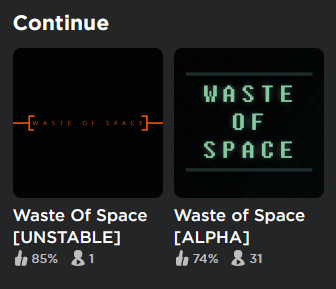
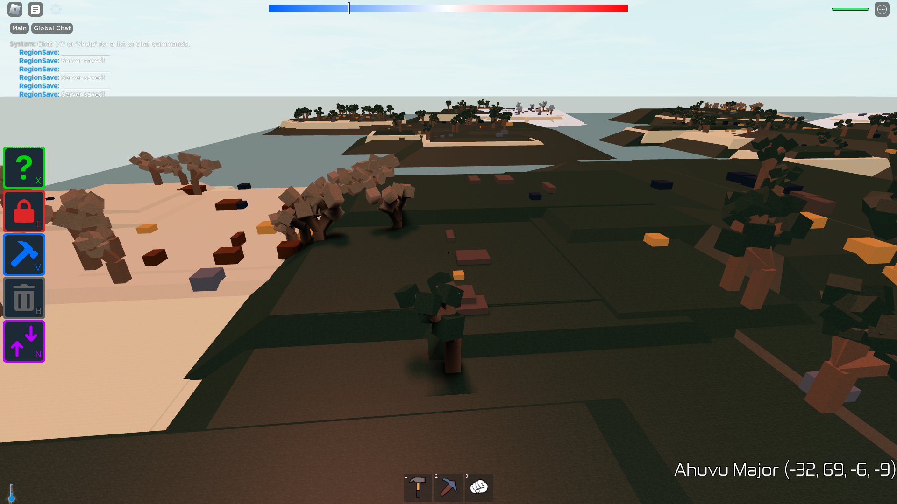

Unstable


Stable is the current release of Waste of Space.
Unstable is the upcoming release. It is kind of the testing version of the game.
Changes compared to stable
This list is likely incomplete
- Heat system
- Heat system
- TODO